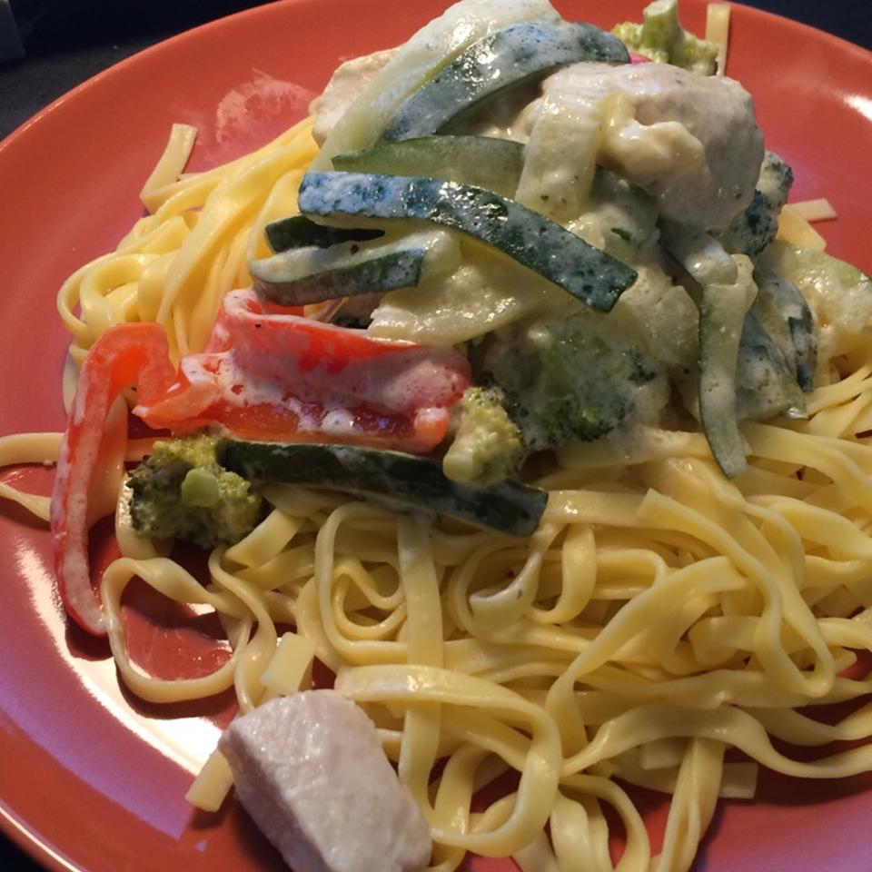

Chicken Alfredo

Description
This quick and easy meal will leave your family thankful for your time in the kitchen.
This alfredo has plenty of veggies and a taste that children will love.
Ingredients
- 6 oz dry fettuccine pasta
- 1 8oz package cream cheese
- 6 tablespoons butter
- 1/2 cup milk
- 1/2 teaspoon garlic powder
- salt and pepper to taste
- 2 skinless, boneless chickn breast halves - cooked and cubed.
- 2 cups chopped fresh broccoli
- 2 small zucchini, julienned
- 1/2 cup chopped red bell pepper
Steps
- Bring a large pot of lightly salted water to a boil. Add pasta, and cook for 8 to 10 minutes, or until al dente; drain.
- While pasta is cooking, melt cream cheese and butter in a skillet over low heat. Stir until smooth. Stir in milk, and season with garlic powder, salt, and pepper. Simmer for 3 minutes, or until thickened, stirring constantly.
- Mix in chicken, broccoli, zucchini, and red pepper. Cook 3 minutes over medium heat, then reduce heat, and simmer 5 minutes, or until vegetables are tender. Serve over fettuccine.